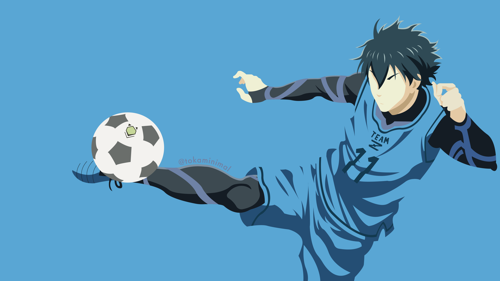

UIPC NEWS
Events handled and Participated by UIPC
75th Grand Alumni
University of Iloilo celebrates the commencement of its 75th Grand Alumni Homecomming This event was graced by our guest of Honor Mr. Jhett Tolentino, a Grammy Awardee and three-time Tony Awardee and proud alumnus of University of Iloilo, Batch 1997
Date Posted: October 30, 2022

75th Grand Alumni
University of Iloilo celebrates the commencement of its 75th Grand Alumni Homecomming This event was graced by our guest of Honor Mr. Jhett Tolentino, a Grammy Awardee and three-time Tony Awardee and proud alumnus of University of Iloilo, Batch 1997
Date Posted: October 30, 2022